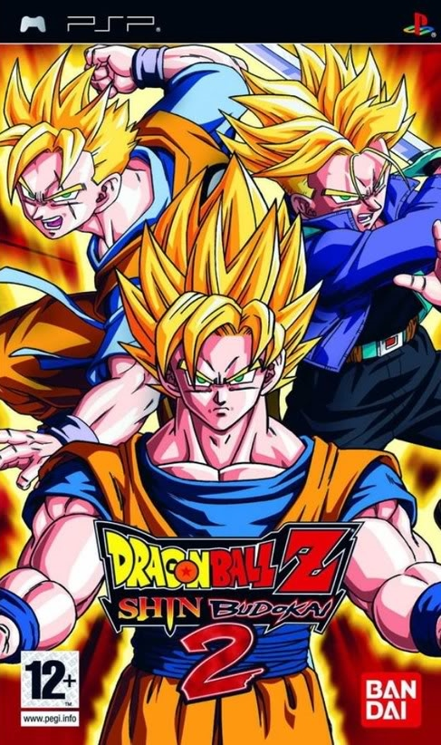

Bem vindos ao site de jogos e emuladores!
Aqui você terá a esperiencia de jogar os variáveis jogos, porem, em seu computador.
Nostalgicos e recentes em um só lugar, com um click, talves dois ou três. Isso vai depender de quantos viros eu quero que seu pc pegue.
God of War: Ghost of Sparta

Ghost of Sparta se passa entre o primeiro e segundo jogos da franquia (God of War I e II), e mostra um lado do personagem que ninguém até então havia percebido: seu lado sensível. Na história, Kratos deve encontrar seu irmão Deimos, que foi capturado pelo Deus da Morte, Thanatos, enquanto eles ainda eram pequenos.
Grand Theft Auto: Vice City Stories

Cronologicamente acontecendo antes de GTA 3, a história de Vice City (inspirada em Miami) acontece no ano de 1986, onde o protagonista Tommy Vercetti precisa pagar uma dívida ao seu antigo chefe, o mafioso Sonny Forelli, que perdeu todo o dinheiro e drogas em uma emboscada na qual Tommy foi vítima.
Naruto Shippuden: Ultimate Ninja Impact
Ao fim dos eventos da história de Naruto, o ninja alaranjado parte com seu mestre Jiraya para realizar um treinamento a fim de aprender a controlar melhor o poder da “Kyuubi”. É exatamente no ponto de retorno ao lar que Naruto Shippuden: Ultimate Ninja Impact começa.
Dragon Ball Z - Shin Budokai 2
Dragon Ball Z: Shin Budokai - Another Road (conhecido simplesmente como Dragon Ball Z:? Shin Budokai 2 (ドラゴン ボール Z 真 武 道 会 2, Doragon Boru Zetto Shin Budokai Tzu, Dragon Ball Z: True Torneio 2) no Japão) é a sequela para Dragon Ball Z: Budokai Shin. O jogo apresenta uma nova história que narra o conto da aparição de Majin Buu no tempo do Trunks do Futuro uns anos depois do Trunks destruir os Androides e o Cell. Como Majin Buu é mais forte que o Trunks, ele usa a máquina do tempo para recrutar os guerreiros Z originais para a assistência, acabou conseguindo a destruição do Majin Buu.